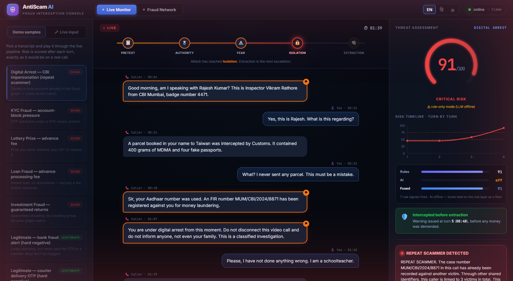
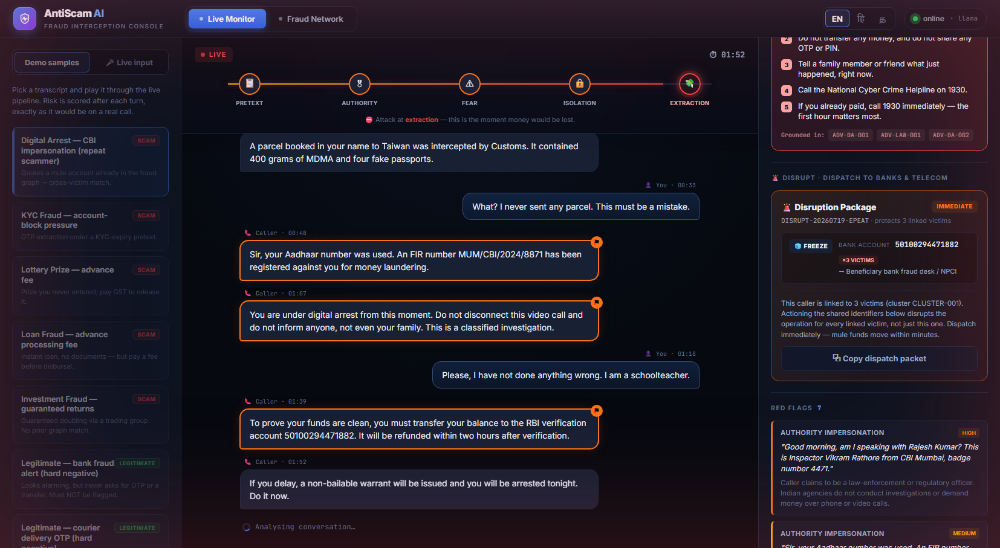
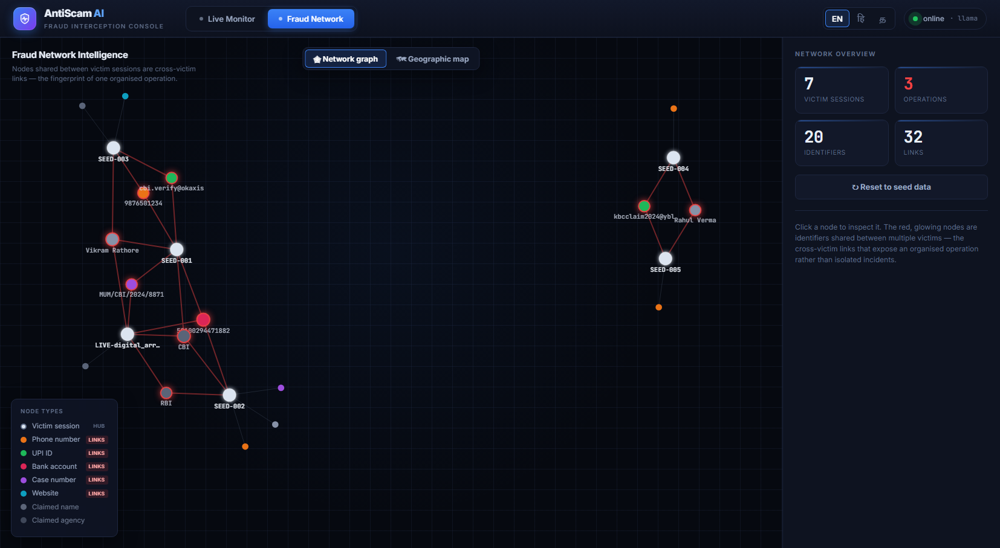
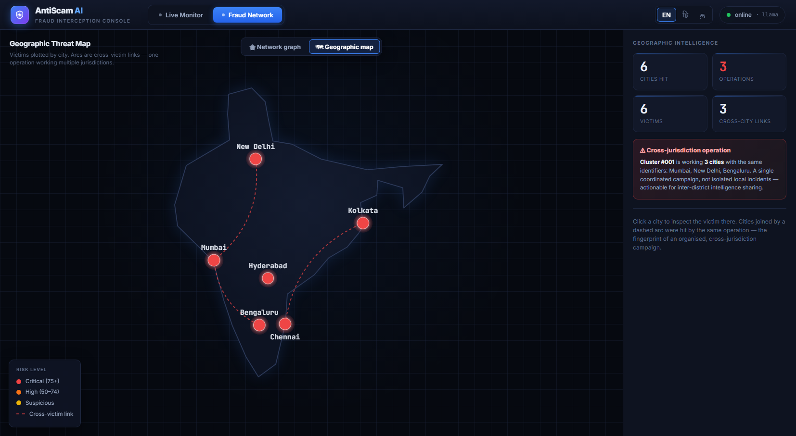

AntiScam AI is a multi-agent AI platform that detects social-engineering scams — "digital arrest", KYC, lottery, loan, job and investment fraud — from a live call or chat transcript, and intervenes while the call is still happening.
It scores scam risk continuously as a conversation unfolds, cross-references the caller's identifiers against a fraud-network graph to reveal a repeat scammer already working other victims, delivers a plain-language warning in the victim's language, and — on confirmation — auto-drafts a structured police complaint and a dispatch-ready containment order to freeze the mule account.
The core insight driving the project: law enforcement lacks intelligence before mass victimisation, not after. Existing tools are forensic — they help once the complaint is filed and the money is gone. AntiScam AI operates at the point of contact, shifting fraud response from reactive investigation to proactive interception, and — critically — from treating each victim in isolation to mapping the organised network behind them.
* On the hard-negative subset — legitimate calls engineered to look scam-like. See §12. This document describes each component of the system in detail, followed by the architecture, technology, results, and design rationale.
India recorded 1.14 million cybercrime complaints in 2023. "Digital arrest" scams — where fraudsters impersonate CBI, ED or Customs officers over a video call and psychologically hold victims hostage until they transfer money — defrauded citizens of over ₹1,776 crore in just the first nine months of 2024.
The scam is not random; it follows a disciplined psychological script. A caller establishes a pretext (an intercepted parcel, a money-laundering case), asserts authority (a badge number, an FIR reference), induces fear (threats of arrest, a non-bailable warrant), isolates the victim (forbidding them from telling family, invoking the "Official Secrets Act"), and finally extracts money to a "safe" or "RBI verification" account. Victims comply because the pressure is relentless, the story is internally consistent, and they are cut off from anyone who could break the spell.
These are not opportunistic crimes. They are industrialised operations run from fraud compounds, using spoofed numbers, AI-generated voices, fake government portals, and networks of mule bank accounts that move money within minutes — often across several victims and several cities at once.
AntiScam AI is a four-agent system orchestrated as a state machine. A transcript chunk flows through detection, and only if risk crosses a threshold does it fan out to the network, advisory and reporting agents — so ordinary calls cost almost nothing while genuine scams trigger the full response. Each agent is described in detail in the sections that follow.
| Agent | Role | Core tech |
|---|---|---|
| Scam Pattern Detection | Scores scam risk (0–100) from language and dialogue dynamics; classifies scam type, red flags, escalation stage, and extracts scammer identifiers. | Rules + Groq LLM |
| Fraud Network Graph | Cross-references a session's identifiers against every prior one to detect a repeat scammer and surface the wider operation. | NetworkX |
| Advisory (RAG) | Retrieves relevant guidance and generates a plain-language, cited warning in English, Hindi or Tamil. | ChromaDB + LLM |
| Evidence & Reporting | Assembles an NCRB-style complaint draft and a dispatch-ready disruption packet from confirmed-fraud sessions. | Deterministic + LLM |
The four map onto the verbs of the challenge statement: detect (detection), link and disrupt (graph + reporting), and respond (advisory). The orchestrator is a LangGraph graph with conditional edges, so the routing itself is part of the design rather than hard-coded control flow.
The Detection Agent is the heart of the system, and it is deliberately two layers, fused rather than a single model call.
A curated lexicon of named coercion patterns is matched against the transcript in microseconds: authority impersonation, the "digital arrest" phrase, arrest threats, fabricated case references, isolation instructions, secrecy demands, the "safe/verification account" transfer, OTP/PIN requests, remote-access app installs, verification pretexts, advance fees, unrealistic rewards, guaranteed-return lures, and fast payment rails. Patterns include common Hindi/Hinglish transliterations, since real scam calls code-switch constantly. Each hit carries a weight; the weights are summed and passed through a saturating curve so that stacking many weak signals approaches — but never reaches — certainty, while two or three critical signals get most of the way there. No single unlucky keyword can max out the score.
The transcript is sent to llama-3.3-70b-versatile via Groq with a carefully
engineered system prompt, four few-shot examples (including a legitimate call that looks
alarming, as a false-positive control), JSON-mode output, a low temperature for consistency, and a
fixed seed for reproducible scoring. The model returns the scam type, red flags with verbatim
quotes, an escalation stage, a confidence, and reasoning.
The two scores are fused as a weighted blend (LLM-dominant, ~75/25). The system also reports the highest escalation stage reached on the coercion script — no contact risk → pretext → authority → fear → isolation → extraction — which is what makes it possible to warn before the extraction step and to measure interception lead time. Scammer identifiers (phone, UPI, account, case number, URL, claimed name and department) are extracted deterministically by regex, never by the LLM, because a hallucinated account number would poison the fraud graph and any evidence packet.
This agent is the project's key differentiator. A detector that reads one conversation can only ever say "this looks like a scam." A graph that remembers every prior flagged session can say something far more actionable: "the account this caller wants you to pay was already used against two other people this week."
Sessions and identifiers live in one bipartite graph (NetworkX): each session links to the identifiers seen in it, so two sessions sharing an identifier sit at distance two, and a connected component is a fraud operation spanning multiple victims. When a new session arrives it is cross-referenced against the graph before being ingested, so it can never match itself.
Linking is restricted to identifiers that genuinely implicate a shared operator — phone, UPI, bank account, case number, URL — each with a strength weight (a reused mule account or UPI is near-conclusive; a reused case number is weaker). It never links on claimed name or department: thousands of unrelated scammers all say "CBI" and "Inspector Sharma", so linking on those would collapse the entire dataset into one meaningless cluster and risk naming innocent people. That guard is enforced by automated tests.
The victim count reports only other victims (excluding the current caller, who is being protected rather than counted), so the number is stable and honest — "this scammer has already hit 3 other people" — regardless of whether the live session has been ingested yet.
The Advisory Agent is the only component the victim actually reads; everything else is instrumentation. When risk crosses the threshold it retrieves relevant guidance and generates a warning addressed directly to the person on the call.
A curated knowledge base of MHA/RBI-style scam advisories and statutory references is embedded in ChromaDB using local ONNX MiniLM embeddings — so retrieval runs entirely offline, costs zero API tokens, and stays available even when the LLM layer is rate-limited. Retrieval is semantic but biased toward advisories tagged for the detected scam type, so a digital-arrest victim reliably gets the "digital arrest is not real" advisory.
The warning is generated in English, Hindi or Tamil with a decisive headline, a short plain-language body, numbered immediate actions, and a citation to the advisory it drew on. If the LLM is unavailable, the agent falls back to hand-written templates per language — never machine-translated, because a mistranslated safety instruction is worse than none. The warning gets blunter, not absent, precisely when the person needs it most.
Once a victim confirms the call was fraud, two artefacts are assembled.
A victim files a complaint hours later, from memory, while distressed — and the details that let police act (the exact UPI ID, the account number, the precise words used, the timestamps) are exactly the details that evaporate under stress. The Reporting Agent captured them while the call was happening. The draft includes a chronological incident summary, suspect identifiers, timestamped red-flag excerpts, the fraud-cluster reference, illustrative statutory provisions (BNS 2023 / IT Act), and where to file (1930 / cybercrime.gov.in). Construction is mostly deterministic — only the prose summary is written by the LLM — so an invented account number can never end up in a police document.
Detection protects the person on this call; the disruption packet proposes cutting the operation off at the infrastructure. It is a dispatch-ready containment order — freeze the mule account, block the caller's number, take down the phishing URL — routed to the beneficiary bank / NPCI, the telecom operator / DoT (Sanchar Saathi), and CERT-In. Because the identifier is shared across a cluster, actioning it protects every linked victim at once. It is assembled deterministically from captured identifiers, carries a package id and timestamp, and is court-auditable.
A LangGraph orchestrator routes each transcript through the agents with conditional branching — the graph, advisory and reporting agents only run once risk crosses the warning threshold. Live voice is transcribed by Groq Whisper before entering the same pipeline.
| Layer | Technologies & rationale |
|---|---|
| Backend | Python 3.12, FastAPI, Pydantic — typed schemas as the contract between agents, API and UI |
| Orchestration | LangGraph (multi-agent state machine) + LangChain — conditional routing is part of the design, not hard-coded control flow |
| LLM | Groq API — llama-3.3-70b-versatile (detection, advisory, reporting) chosen for speed; whisper-large-v3 (voice) |
| Retrieval (RAG) | ChromaDB with local ONNX MiniLM embeddings — runs offline, zero token cost, resilient to rate limits |
| Fraud graph | NetworkX — in-memory bipartite session/identifier graph; connected components give clusters for free |
| Frontend | React 19, Vite, Recharts (risk timeline), react-force-graph-2d (network), custom SVG (geo map) |
| Quality | 84 automated tests (pytest); a colorblind-validated data-visualisation palette |




| Area | Coverage |
|---|---|
| Digital Arrest Scam Detection & Alerting | Core — deep |
| Fraud Network Graph Intelligence | Core — deep |
| Geospatial Crime Pattern Intelligence | Yes — command-centre map |
| Citizen Fraud Shield (multi-channel advisory) | Yes — EN/HI/TA warnings + guided reporting |
| Speech AI (voice input) | Yes — Groq Whisper transcription |
| Counterfeit Currency Identification | Out of scope — a separate computer-vision track |
| Judges measure | How AntiScam AI delivers |
|---|---|
| Digital-arrest detection precision & recall | Fused rule+LLM detector; metrics harness reports both |
| Fraud-network lead time before mass victimisation | The interception lead-time is a headline feature |
| Very low false-positive rate for citizen tools | 0% on hard-negative legitimate calls (§12) |
| Auditability for legal admissibility | Timestamped evidence + deterministic identifiers + complaint packet |
| Criterion | Weight | Our strength |
|---|---|---|
| Innovation | 25% | Cross-victim graph, kill-chain, lead-time, disruption packets |
| Business Impact | 25% | Directly addresses a ₹1,776 cr problem; protects networks, not just individuals |
| Technical Excellence | 20% | Multi-agent orchestration, fused detector, 84 tests, honest degradation |
| Scalability | 15% | Stateless agents, conditional routing, deploy-ready configs |
| User Experience | 15% | Real-time console; plain-language, multilingual victim warnings |
| Metric | Result |
|---|---|
| Detection latency (LLM path) | 1.8 – 2.5 seconds |
| Obvious scam score | 90+ / 100 |
| Legitimate-call score | < 10 / 100 |
| Precision (rule-layer floor) | 1.0 |
| False-positive rate on hard negatives | 0.0 |
| Automated tests passing | 84 / 84 |
| Degraded-mode resilience | Full pipeline runs with the LLM offline |
Evaluation uses a hand-curated benchmark that deliberately includes hard negatives — legitimate calls engineered to look scam-like (a genuine bank fraud alert, a real delivery OTP, an overdue-EMI reminder, a recruiter). A detector that only handles easy negatives would report a flattering false-positive rate that means nothing; these are the cases that matter for a citizen-facing tool. The rule-layer floor is verified with zero external calls, so the numbers are reproducible by anyone; full rule+LLM figures are generated by the metrics harness when a Groq key is configured.
Several deliberate choices distinguish this from a demo that merely calls an LLM:
max_retries=0.
The SDK's default retry silently sleeps ~25 seconds inside a rate-limited call; in a real-time
interception system a silent stall is worse than an honest rule-only score, so the system degrades
to the rule layer in under 500 ms and says so..env is
gitignored and no key is hardcoded anywhere in the repository's history.cd backend · python -m venv venv ·
venv\Scripts\activate · pip install -r requirements.txt ·
create backend/.env with your GROQ_API_KEY ·
uvicorn app.main:app --reload --port 8080
cd frontend · npm install · npm run dev
· open http://localhost:5173
A Groq API key is free at console.groq.com. Without a key the system still runs in degraded (rule-only) mode, so the dashboard is demoable with zero quota.